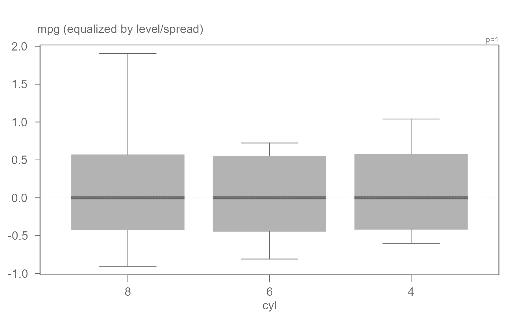
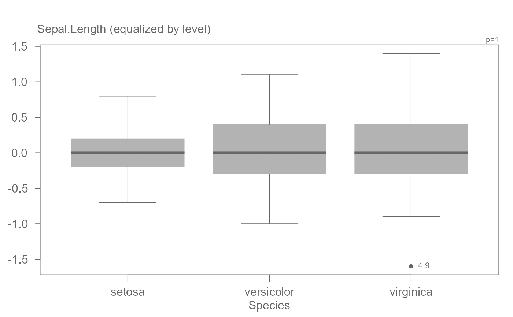
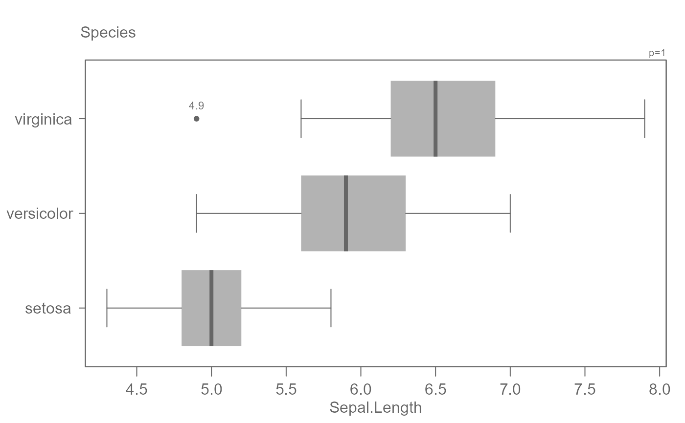
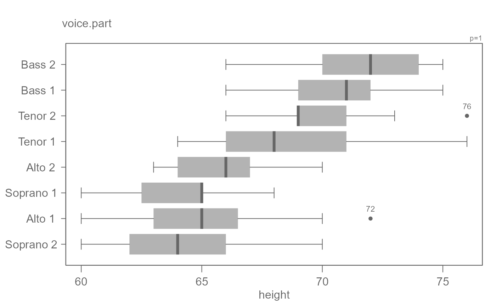
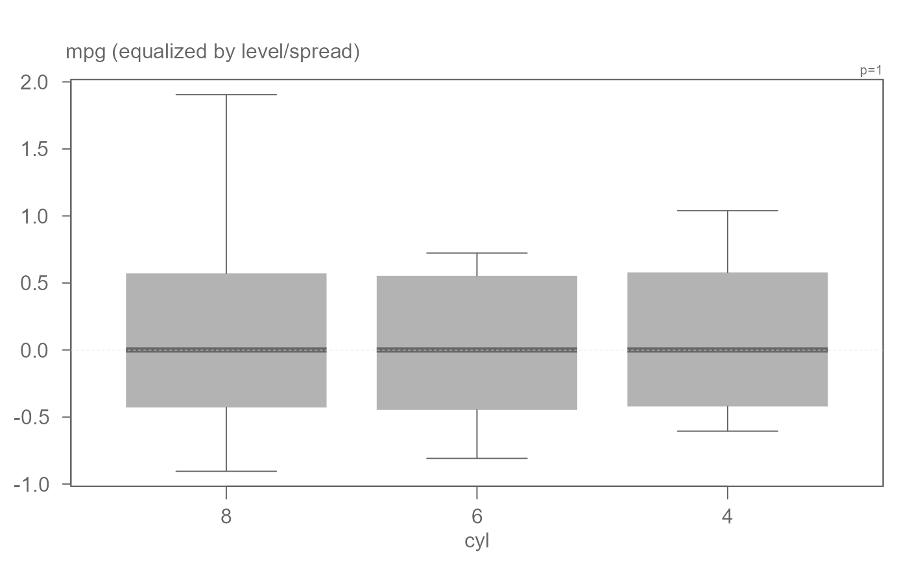
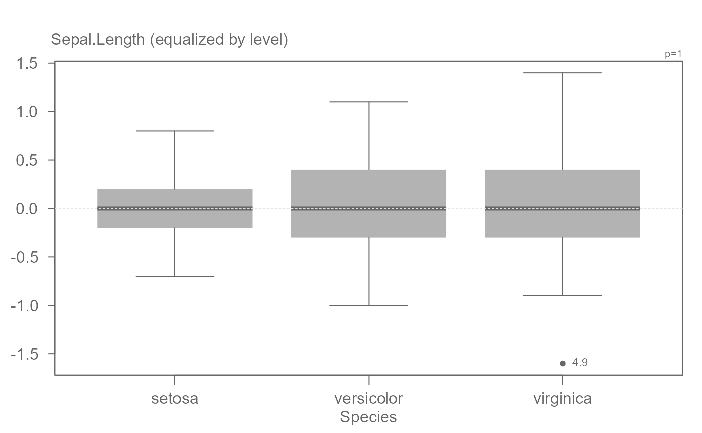
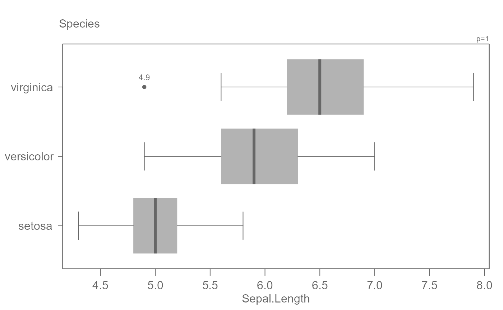
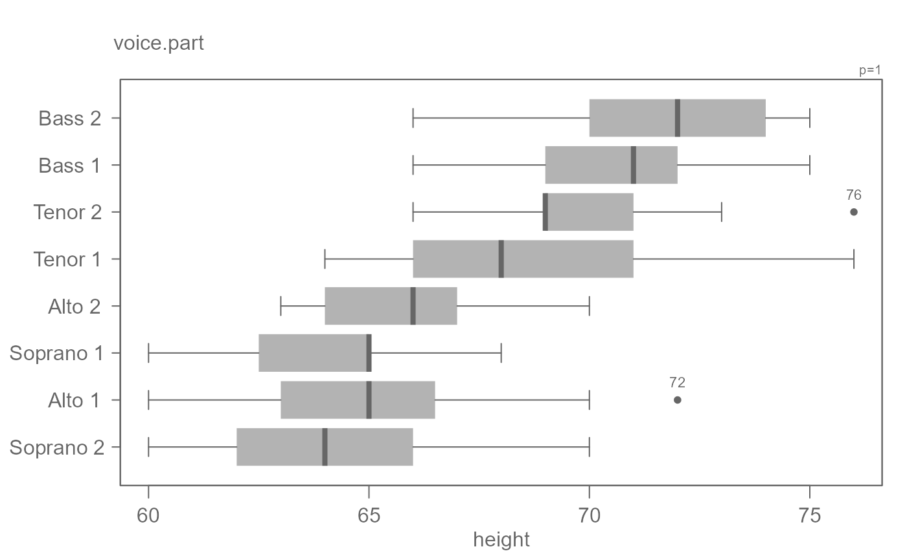

eda_boxls creates boxplots conditioned on a categorical
variable while providing the option to level the data or equalize the spreads.
Usage
eda_boxls(
dat,
x,
fac,
p = 1,
tukey = FALSE,
outlier = TRUE,
out.txt = NULL,
type = "none",
notch = FALSE,
horiz = FALSE,
xlab = NULL,
ylab = NULL,
grey = 0.6,
fill = "grey70",
boxcol = NULL,
outcol = "grey40",
whiskcol = "grey40",
medcol = "grey40",
reorder = TRUE,
reorder.stat = "median",
show.par = TRUE
)Arguments
- dat
Dataframe.
- x
Continuous variable.
- fac
Categorical variable.
- p
Power transformation to apply to the continuous variable.
- tukey
Boolean determining if a Tukey transformation should be adopted (FALSE adopts a Box-Cox transformation).
- outlier
Boolean indicating if outliers should be plotted.
- out.txt
Column whose values are to be used to label outliers. If set to
NULL(the default), the record number is displayed.- type
Plot type. "none" = no equalization ; "l" = equalize by level; "ls" = equalize by both level and spread.
- notch
Boolean determining if notches should be added.
- horiz
plot horizontally (TRUE) or vertically (FALSE).
- xlab
X label for output plot.
- ylab
Y label for output plot.
- grey
Grey level to apply to plot elements (0 to 1 with 1 = black).
- fill
Boxplot fill color.
- boxcol
Boxplot outline color.
- outcol
Outlier color.
- whiskcol
Whisker line color.
- medcol
Median line color.
- reorder
Boolean determining if factors have to be reordered based on median, upper quartile or lower quartile (set in
reorder.type).- reorder.stat
Statistic to reorder level by if
reorderis set toTRUE. Either"median","upper"(for upper quartile) or"lower"(for lower quartile). Iftypeis set to a value other than"none", the this argument is ignored and the stat defaults to"median".- show.par
Boolean determining if power transformation should be displayed in the plot.
Details
By default, the boxplots are re-ordered by their median values.
If the outlier text to be displayed is its own value, it will not be modified if the data are equalized by level or spread.
Note that the notch offers a 95 percent test of the null that the true medians are equal assuming that the distribution of each batch is approximately normal. If the notches do not overlap, we can assume that medians are significantly different at a 0.05 level. Note that the notches do not correct for multiple comparison issues when three or more batches are plotted.
Examples
# A basic boxplot. The outlier is labeled with the row number by default.
eda_boxls(mtcars,mpg, cyl, type="none")
 # A basic boxplot. The outlier is labeled with its own value.
eda_boxls(mtcars,mpg, cyl, type="none", out.txt=mpg )
# A basic boxplot. The outlier is labeled with its own value.
eda_boxls(mtcars,mpg, cyl, type="none", out.txt=mpg )
 # Boxplot equalized by level. Note that the outlier text is labeled with its
# original value.
eda_boxls(mtcars,mpg, cyl, type="l", out.txt=mpg )
# Boxplot equalized by level. Note that the outlier text is labeled with its
# original value.
eda_boxls(mtcars,mpg, cyl, type="l", out.txt=mpg )
 #> ========================
#> Note that the data have been equalized with "type" set to "l".
#> ========================
# Boxplots equalized by level and spread
eda_boxls(mtcars,mpg, cyl, type="ls", out.txt=mpg )
#> ========================
#> Note that the data have been equalized with "type" set to "l".
#> ========================
# Boxplots equalized by level and spread
eda_boxls(mtcars,mpg, cyl, type="ls", out.txt=mpg )
 #> ========================
#> Note that the data have been equalized with "type" set to "ls".
#> ========================
# Hide outlier
eda_boxls(mtcars,mpg, cyl, type="ls", out.txt=mpg , outlier=FALSE)

#> ========================
#> Note that the data have been equalized with "type" set to "ls".
#> ========================
# Equalizing level helps visualize increasing spread with increasing
# median value
eda_boxls(iris, Sepal.Length, Species, type = "l", out.txt=Sepal.Length)

#> ========================
#> Note that the data have been equalized with "type" set to "l".
#> ========================
# For long factor level names, flip plot
eda_boxls(iris, Sepal.Length, Species, out.txt=Sepal.Length , horiz = TRUE)

# By default, plots are ordered by their medians.
singer <- lattice::singer
eda_boxls(singer, height, voice.part, out.txt=height, horiz = TRUE)

# To order by top quartile, set reorder.stat to "upper"
eda_boxls(singer, height, voice.part, out.txt=height, horiz = TRUE,
reorder.stat = "upper")
#> ========================
#> Note that the data have been equalized with "type" set to "ls".
#> ========================
# Hide outlier
eda_boxls(mtcars,mpg, cyl, type="ls", out.txt=mpg , outlier=FALSE)

#> ========================
#> Note that the data have been equalized with "type" set to "ls".
#> ========================
# Equalizing level helps visualize increasing spread with increasing
# median value
eda_boxls(iris, Sepal.Length, Species, type = "l", out.txt=Sepal.Length)

#> ========================
#> Note that the data have been equalized with "type" set to "l".
#> ========================
# For long factor level names, flip plot
eda_boxls(iris, Sepal.Length, Species, out.txt=Sepal.Length , horiz = TRUE)

# By default, plots are ordered by their medians.
singer <- lattice::singer
eda_boxls(singer, height, voice.part, out.txt=height, horiz = TRUE)

# To order by top quartile, set reorder.stat to "upper"
eda_boxls(singer, height, voice.part, out.txt=height, horiz = TRUE,
reorder.stat = "upper")